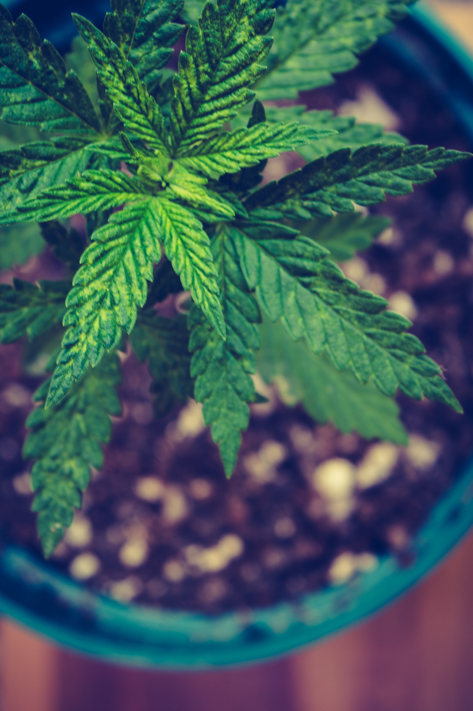
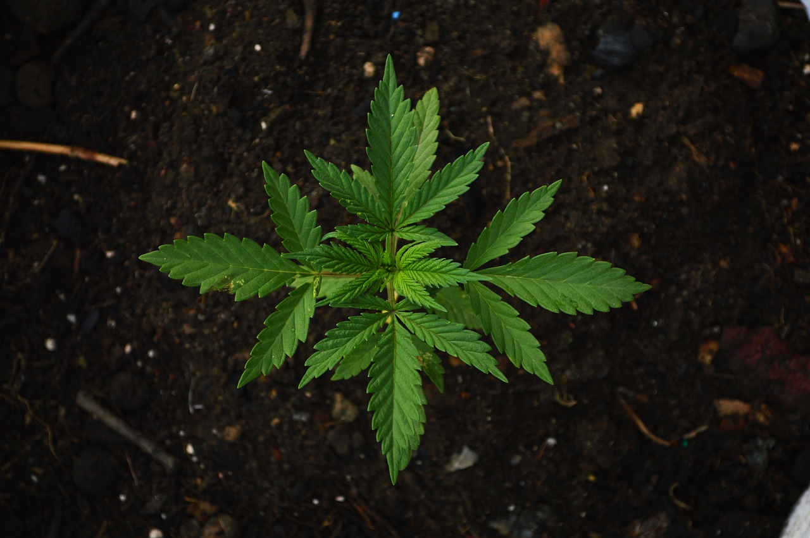
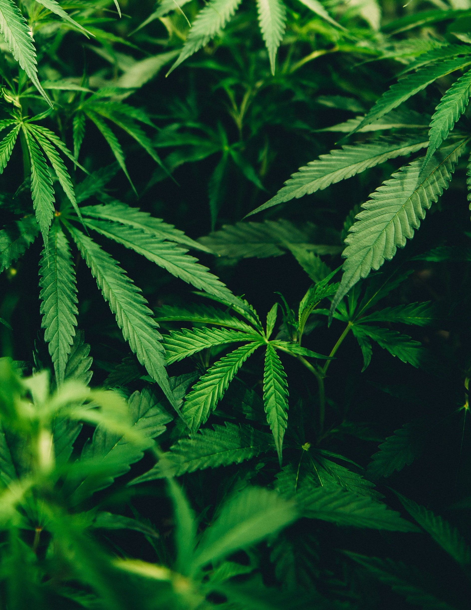

Top articles
Top world-wild articles about cannabis.

Advantages and disadvantages of growing marijuana using hydroponics
Hydroponics is used throughout the horticulture industry as an alternative means of growing—presenting a whole host of benefits when compared to growing in soil. Relying on using an inert medium like perlite, rockwool, or clay pellets, the premise is that roots are in direct contact with a nutrient solution while still getting oxygen from water provided by an electrical pump.

Trichomes on cannabis plants: what are they and why are they important?
Most cannabis users will agree that a healthy coating of trichomes is a good sign that they’re enjoying some great weed. But why exactly is that? What is it that makes the tiny, frosty particles on your weed so special?.

Trichomes on cannabis plants: what are they and why are they important?
Most cannabis users will agree that a healthy coating of trichomes is a good sign that they’re enjoying some great weed. But why exactly is that? What is it that makes the tiny, frosty particles on your weed so special?.

How to make cannabis chocolate - an easy recipe
It's safe to say chocolate is the best thing on earth, right? No wait, cannabis is! In reality, cannabis-infused chocolate is perhaps one of the more perfect unions found in this world. Chocolate has been used for centuries as a food, medicine, and even an aphrodisiac. It’s also considered a stimulant and has many health benefits when consumed in moderation.